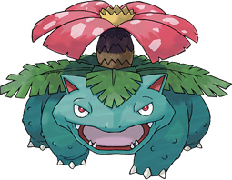

#001 Bulbasaur


0.7m,
6.9kg
Bulbasaur is a small, quadruped Pokémon that has blue-green skin with darker green patches it has red eyes with white pupils and pointed, ear-like structures on top of its head
GrassBugPoison
Bulbasaur is a small, quadruped Pokémon that has blue-green skin with darker green patches it has red eyes with white pupils and pointed, ear-like structures on top of its head
| Hidden Abilities | Clorophyll, Overgrow |
| Where to Found | Luminoise City |
 Ivysaur@ LV.16GrassPoisonBug#002 |
 Venusaur@ LV.32GrassPoisonBug#003 |